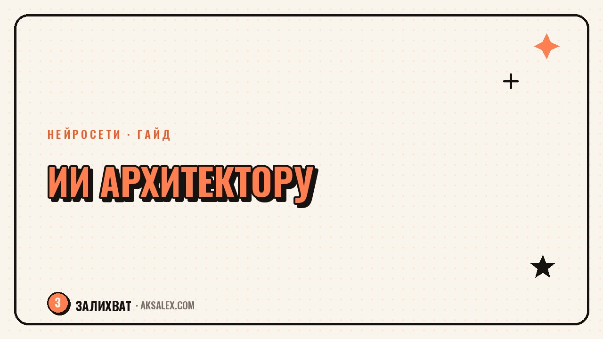

Нейросети для архитектора: визуализация и концепты

На раннем этапе проекта архитектор перебирает десятки вариантов концепта, прежде чем показать заказчику что-то конкретное. Классический рендер для каждого варианта - это часы работы в 3D-редакторе. Нейросети позволяют показать заказчику черновую визуализацию за минуты, оставляя точный расчёт и рабочую документацию профессиональным САПР-программам. Разберём, что из этого реально ускоряет работу, а что остаётся красивой картинкой без практической пользы.
Генерация концептов на старте проекта
Когда нужно быстро показать заказчику несколько направлений - минимализм, скандинавский стиль, индустриальный лофт - генеративные модели вроде Midjourney и Stable Diffusion создают наглядные образы за считаные минуты. Это не готовый проект, а способ быстро сузить выбор заказчика до одного-двух направлений, прежде чем тратить время на детальную проработку.
Специализированные инструменты вроде Veras и ARKO встраиваются прямо в SketchUp и Revit, превращая простую 3D-модель в фотореалистичную картинку с разными материалами фасада. Архитектор строит только форму объёма, а нейросеть быстро показывает, как это будет выглядеть в разной отделке - кирпич, штукатурка, дерево.
Где это экономит больше всего времени
- Презентация нескольких стилевых направлений на первой встрече с заказчиком
- Быстрая проверка, как объём здания смотрится в разных материалах
- Черновая визуализация интерьера до заказа полноценного 3D-рендера
- Генерация референсов для обсуждения с командой перед детальным проектированием
Где нейросеть ошибается: пропорции и физика конструкции
Генеративные модели обучены на изображениях, а не на инженерных расчётах, поэтому они не понимают, выдержит ли конструкция нагрузку и правильно ли расставлены окна относительно несущих стен. Картинка может выглядеть убедительно и при этом содержать архитектурно невозможные решения - лестницу в никуда, окно на месте опоры, непропорциональные пролёты.
Нейросеть рисует то, что выглядит правдоподобно, а не то, что физически возможно. Проверять конструктивную реализуемость картинки всегда остаётся задачей архитектора и инженера, а не алгоритма.
Поэтому сгенерированное изображение хорошо работает как настроение и образ, но не как чертёж. Как только заказчик утвердил направление, дальше работа переходит в профессиональный САПР, где размеры, нагрузки и нормы проверяются человеком и специализированным софтом, а не картинкой из генератора.
Ускорение презентаций и клиентских материалов
Кроме самих визуализаций, нейросети экономят время на сборке презентации: текстовое описание концепции, подбор палитры материалов, черновой план подачи проекта заказчику. ChatGPT хорошо помогает структурировать пояснительную записку и описать идею простым языком для заказчика без архитектурного образования.
Это особенно ценно для небольших бюро, где архитектор одновременно проектирует и продаёт проект клиенту, без отдельного маркетолога или копирайтера в команде. Черновик текста нейросеть готовит за минуты, а архитектору остаётся только адаптировать его под конкретный проект и стиль общения с заказчиком.
Сравнение инструментов по задачам
Таблица ниже - ориентир, какой инструмент под какую задачу архитектора стоит пробовать в первую очередь.
| Инструмент | Задача | Формат доступа |
|---|---|---|
| Midjourney / Stable Diffusion | Генерация концептов и настроения проекта | Платная подписка, у Stable Diffusion есть открытые модели |
| Veras | Визуализация 3D-модели из SketchUp и Revit | Платная подписка |
| ARKO | Быстрый рендер материалов на модели | Платная подписка |
| ChatGPT | Пояснительная записка и текст презентации | Бесплатный тариф + платная подписка |
Как встроить нейросети в проектный процесс
Чтобы инструменты приносили пользу, а не отвлекали от проекта, полезно закрепить за нейросетью конкретный этап работы, а не использовать её везде подряд.
- Шаг 1. Используй генерацию образов только на этапе выбора направления, до начала детального проектирования
- Шаг 2. Формируй объём и планировку в профессиональном САПР, а нейросеть подключай для визуализации поверх готовой модели
- Шаг 3. Проверяй каждую сгенерированную визуализацию на конструктивную реализуемость перед показом заказчику
- Шаг 4. Используй языковую модель для черновика текста презентации, а не для расчётов и норм
- Шаг 5. Фиксируй, на каком этапе нейросеть реально сэкономила время, чтобы не платить за инструменты, которые не используются
Частые вопросы
Может ли нейросеть заменить архитектора при проектировании здания?
Нет, потому что нейросеть не проверяет нагрузки, нормы и конструктивную реализуемость решения. Она хорошо показывает образ и настроение проекта, но расчёт и ответственность за здание остаются за архитектором и инженером.
Какая нейросеть лучше подходит для визуализации фасада?
Хорошо себя показывают Veras и ARKO - они встраиваются прямо в SketchUp и Revit и визуализируют уже готовую 3D-модель в разных материалах. Выбор зависит от того, в какой программе архитектор уже строит модель.
Можно ли показывать заказчику сгенерированную нейросетью картинку как финальный проект?
Не стоит выдавать её за финальное решение - это черновой образ, который ещё не проверен на конструктивную реализуемость. Заказчику лучше сразу объяснять, что это визуализация направления, а не готовый чертёж.
Стоит ли использовать генерацию концептов для маленького бюро с ограниченным бюджетом?
Да, потому что это дешевле, чем делать несколько классических рендеров вручную для показа разных направлений. У Stable Diffusion есть открытые модели, которые можно запускать бесплатно при наличии подходящего компьютера.
С чего начать архитектору, который никогда не пробовал нейросети?
Проще всего начать с генерации образов в Midjourney для обсуждения стиля с заказчиком - это не требует специальных навыков. После этого можно попробовать плагин вроде Veras прямо в привычной программе для проектирования.
Раз тема оказалась полезной, вот что почитать следующим. Тексты объявлений и фото объектов: нейросети, которые экономят время риелтору.
Читать статью →а не вручную